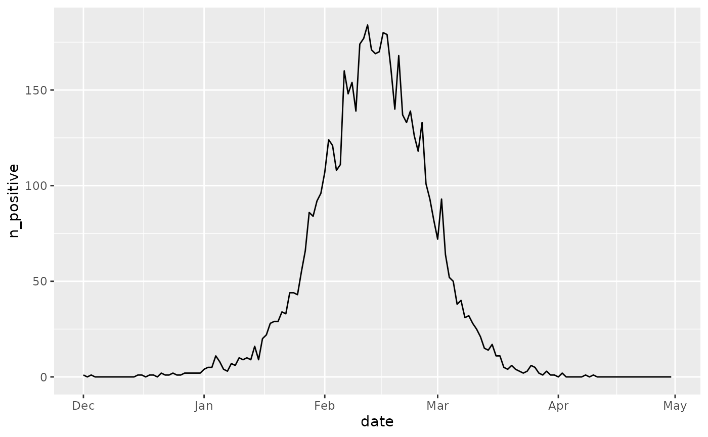
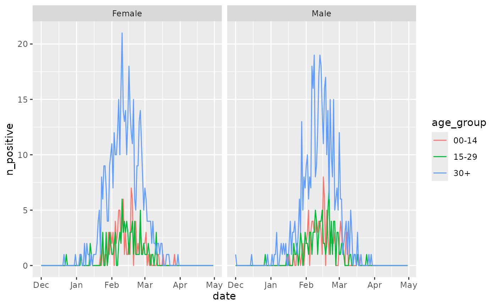
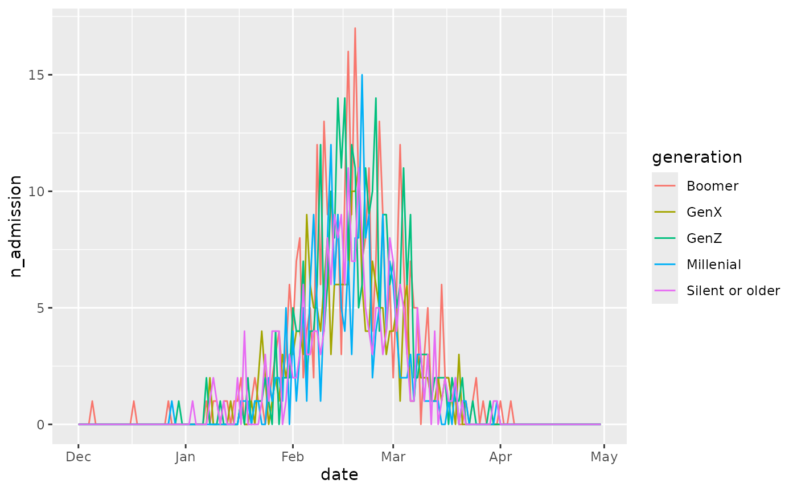

Extending diseasystore - simulist example
Source:vignettes/extending-diseasystore-example.Rmd
extending-diseasystore-example.RmdIntroduction
If you haven’t already, please consult the
vignette("extending-diseasystore") which explains the
concepts of the diseasystores in detail.
In this example, we go through how to create a
diseasystore that implements individual level data. For
this purpose, we use a synthetic data set that we have generated using
the simulist package. This data set is a synthetic line
list from a disease outbreak.
simulist_data
#> # A tibble: 11,330 × 9
#> id case_type sex birth age date_onset date_admission
#> <int> <chr> <chr> <date> <int> <date> <date>
#> 1 1 confirmed m 1951-12-17 68 2019-12-01 2019-12-05
#> 2 2 confirmed f 1962-12-15 57 2019-12-03 NA
#> 3 3 suspected m 1967-12-14 52 2019-12-04 2019-12-11
#> 4 4 suspected m 2005-12-10 14 2019-12-11 2019-12-15
#> 5 6 probable f 1929-12-28 90 2019-12-12 2019-12-17
#> # ℹ 11,325 more rows
#> # ℹ 2 more variables: date_discharge <date>, date_death <date>Given such a data set, the aim is to create a
diseasystore that can be used to retrieve features from
this data set.
Feature identification
To do this, we need to identify the “features” that we want to store
in the diseasystore. In the data, there are some
demographic features such as “sex” and “age” and there are disease
specific features such as “date_onset”, “date_admission”, et cetera.
In this example we will implement the following features:
- Demographic features
-
birth- The birth date of the individuals -
age- The (time-dependent) age of the individuals -
sex- The sex of the individuals
-
- Disease features
-
n_positive- The positive tests performed on the individuals -
n_admission- The time of admission among the individuals -
n_hospital- The time of hospitalisation among the individuals
-
Notice that the naming of the features differ by the prefix
n_ versus no prefix. This dichotomy separates
“stratifications” from “observables”. Either is considered a “feature”
in the diseasystore, but the type of data (stratification
vs. observable) is used when we join the data in
$key_join_features(). However, there are
no differences in the implementation of the features — only in the
naming.
This way of naming features follows the default convention of
diseasystore. However, we are free to overwrite with a
different naming convention if we want to. For example, say we also had
a feature the maximum and minimum temperature. we may want name the
features with the suffix _temperature instead (since we are
not dealing with the “number” of something). In that case, we would need
to update the $.observables_regex field to read1:
...
private = list(
.observables_regex = r"{^n_(?=\w)|_temperature$}",
...
)With the features identified, we begin by assigning a
FeatureHandler to each feature, and design the map between
the feature names and the responsible FeatureHandlers:
DiseasystoreSimulist <- R6::R6Class(
classname = "DiseasystoreSimulist",
inherit = DiseasystoreBase,
...
private = list(
.ds_map = list(
"birth" = "simulist_birth",
"sex" = "simulist_sex",
"age" = "simulist_age",
"n_positive" = "simulist_positive",
"n_admission" = "simulist_admission",
"n_hospital" = "simulist_hospital"
),
.label = "Simulist Synthetic Data",
...
)
)Notice that the names for the ?FeatureHandlers have the
prefix “simulist_”. The features are stored in the data base using these
names, so we include the prefix to avoid any potential conflicts with
other features in the database. For example, the hospitalisation in
DiseasystoreGoogleCovid19 are stored in a table called
“google_covid_19_hospital”. Had both diseasystores omitted
the prefixes, they would both attempt to write to the same “hospital”
table in the database.
Feature implementation
With the features identified, it is time to implement them in the
diseasystore.
That is, we need to construct the ?FeatureHandlers for
each feature.
The birth FeatureHandler
We start by implementing the birth feature.
For this example, we will show first the code that implements the
FeatureHandler and then describe the code in detail.
private = list(
...
# The "birth" feature contains the birth dates of the individuals and is used later
# to compute the age of the individuals at any given time.
simulist_birth = FeatureHandler$new(
compute = function(start_date, end_date, slice_ts, source_conn, ...) {
out <- simulist_data |>
dplyr::transmute(
"key_pnr" = .data$id,
"birth" = .data$birth,
"valid_from" = .data$birth,
"valid_until" = .data$date_death + lubridate::days(1)
) |>
dplyr::filter(
{{ start_date }} < .data$valid_until,
.data$valid_from <= {{ end_date }}
)
return(out)
},
key_join = key_join_count
),
...
)Notice that we create a new instance of FeatureHandler
and assign it to the simulist_birth field in the private
list.
Lets focus on the FeatureHandler we create: Here, we
need to define how the feature is computed (that is, we implement the
$compute() function).
The signature of this function is fixed, and must take the arguments
start_date, end_date, slice_ts,
source_conn, but can then take additional arguments in
....
The birth feature is a simple feature that we can
extract directly from the underlying data set:
simulist_data.
In addition to the feature values themselves (the values stored in
the birth column) we need to include keying data that tells
diseasystore what other features this feature can be joined
to. Since we are working with individual level data, we can use a
personal identification number, “pnr”, as the key. The simulist data
already contains a unique ID for each individual, so we use this as the
personal identification number.
In addition, we need to specify the time period that the feature
covers. In this case, a birth date is assigned at birth, so we use this
as the valid_from date. For the expiration date of the
information, we could either use NA, since the birth date
is always valid, or we could use the date of death, if the individual
has died. In this implementation we use the latter, since this allows
for an easier implementation of the age of the individuals later on.
Notice that valid_until is set as the date after death.
The validity period of the features in diseasystore is the
interval
.
After computing the feature, we filter to ensure that the data is returned only for the requested time period.
Finally, we also specify how the feature can be summarised. That is,
we need to specify the type of key_join the feature should
use.
To illustrate how to determine the type of key_join, we
imagine that we want to determine the number of people who are born on
each date. Given our data set, we could perform the following operations
to summarize the data:
simulist_data |>
dplyr::count(lubridate::year(.data$birth))
#> # A tibble: 91 × 2
#> `lubridate::year(.data$birth)` n
#> <dbl> <int>
#> 1 1929 96
#> 2 1930 131
#> 3 1931 131
#> 4 1932 119
#> 5 1933 115
#> # ℹ 86 more rowsThat is, our feature has a record for each individual, and to
summarise the feature, we need to count the individuals
within each group. This is different from semi-aggregated data where we
would sum the values within each group (see
aggregators for available aggregators).
The sex FeatureHandler
We continue by implementing the sex feature.
Like the birth feature, this is a simple feature that we
can mostly extract directly from the data set:
private = list(
...
# The "sex" feature simply stores the sex from the simulist data
simulist_sex = FeatureHandler$new(
compute = function(start_date, end_date, slice_ts, source_conn, ds, ...) {
out <- simulist_data |>
dplyr::right_join( # Join with birth data to validity period
ds$get_feature("birth", start_date, end_date, slice_ts),
by = c("id" = "key_pnr"),
copy = TRUE
) |>
dplyr::transmute(
"key_pnr" = .data$id,
"sex" = dplyr::if_else(.data$sex == "m", "Male", "Female"),
.data$valid_from, .data$valid_until # Use values from birth feature
)
# No need to filter to ensure the data is only for the requested time period.
# Since we right join with the birth feature, the validity period is already filtered.
return(out)
},
key_join = key_join_count
),
...
)Notice that we again create a new instance of
FeatureHandler and assign it to the
simulist_sex field in the private list.
The computation of the feature is mostly straightforward, but we
would like to use the validity period computed in the birth
feature (the same logic applies for the validity period of the “sex”
information as the “birth” information)
Therefore, we immediately see a difference in the function signature
of the $compute() function, where we include
the ds argument which, like the others, are passed to the
feature handler by diseasystore when we compute features.
This argument holds a reference to the diseasystore we are
building, so we can use it to retrieve other features (in this case, the
birth feature).
Once we have the birth feature, we combine it with the
simulist_data and extract a human-readable label for the
sex.
The age FeatureHandler
The age feature is a bit more complex than the previous
features, as it is a time-dependent feature.
Lets first look at the code:
private = list(
...
# The "age" feature computes the age of the individuals throughout the study period
simulist_age = FeatureHandler$new(
compute = function(start_date, end_date, slice_ts, source_conn, ds, ...) {
# Using birth date, compute the age at the start of the study period
age <- ds$get_feature("birth", start_date, end_date, slice_ts) |>
dplyr::mutate(
age_at_start = as.integer(
!!age_on_date("birth", start_date, conn = ds %.% target_conn)
)
) |>
dplyr::compute()
# Now, compute the next birthdays of the individual
# (as many as we need to cover the study period)
# and compute the age of the individuals throughout the study period with their
# birthdays denoting the starts and ends of the validity periods.
out <- purrr::map(
seq.int(
from = 0,
to = ceiling(lubridate::interval(start_date, end_date) / lubridate::years(1))
),
~ age |>
dplyr::mutate(
# The age for this iteration of the age computation loop
"age" = .data$age_at_start + .x
) |>
dplyr::mutate( # Split to make the "age" column available for the next mutate
# Compute the birthday for the age
"birthday" = !!add_years("birth", "age", conn = ds %.% target_conn)
) |>
dplyr::mutate( # Again, split to make "birthday" available for the next mutate
# And when that age is not valid
"next_birthday" = !!add_years("birthday", 1, conn = ds %.% target_conn)
) |>
dplyr::filter( # Remove the birthdays that fall outside of the study period
.data$birthday <= {{ end_date }},
.data$birthday < .data$valid_until | is.na(.data$valid_until)
) |>
dplyr::transmute( # We assign the birth dates as the validity periods
"key_pnr" = .data$key_pnr,
"age" = .data$age,
"valid_from" = .data$birthday,
"valid_until" = pmin(
.data$valid_until,
.data$next_birthday,
na.rm = TRUE
)
)
) |>
purrr::reduce(dplyr::union_all) # Collapse to a single dataset
return(out)
},
key_join = key_join_count
),
...
)As with the sex feature, this feature also depends on
the birth feature, so we include the ds
argument in the function signature of
$compute().
Since the age is time-dependent, we need to compute the age of the individuals at the start of the study period (i.e. the period requested by the user), and compute their age throughout the study period.
The age at the start of the study period is computed directly by from
the birth date of the individuals using the age helper function
age_on_date()2.
Once the age at start is known, we determine the length of the study
period (in years) and compute the birthdays of the individuals
throughout the period3. Each birthday has an associated age and a
validity period which runs from the birthday to the next birthday.
Notice that we sometimes compute birthdays that fall outside of the
study period, which we filter out before combining to a single data set
with dplyr::union_all().
In all, we end with a data set containing the time-dependent age of the individuals throughout the study period.
The n_positive FeatureHandler
The n_positive feature is a simple feature that we can
extract directly from the data set with a little filtering:
private = list(
...
# The "n_positive" feature contains the positive tests taken by the individuals
simulist_positive = FeatureHandler$new(
compute = function(start_date, end_date, slice_ts, source_conn, ...) {
out <- simulist_data |>
dplyr::filter(.data$case_type == "confirmed") |>
dplyr::transmute(
"key_pnr" = .data$id,
"valid_from" = .data$date_onset,
"valid_until" = .data$valid_from + lubridate::days(1)
) |>
dplyr::filter(
{{ start_date }} < .data$valid_until,
.data$valid_from <= {{ end_date }}
)
return(out)
},
key_join = key_join_count
),
...
)The n_hospital FeatureHandler
Like the n_positive feature, the n_hospital
is straightforward to implement:
private = list(
...
# The "n_hospital" feature contains the hospitalizations of the individuals
simulist_hospital = FeatureHandler$new(
compute = function(start_date, end_date, slice_ts, source_conn, ds, ...) {
out <- simulist_data |>
dplyr::filter(
.data$case_type == "confirmed",
!is.na(.data$date_admission)
) |>
dplyr::transmute(
"key_pnr" = .data$id,
"valid_from" = .data$date_admission,
"valid_until" = .data$date_discharge + lubridate::days(1)
) |>
dplyr::filter(
{{ start_date }} < .data$valid_until,
.data$valid_from <= {{ end_date }}
)
return(out)
},
key_join = key_join_count
),
...
)The n_admission FeatureHandler
For the n_admission feature, we use the already computed
n_hospital feature to compute the admissions. We could have
computed directly from the simulist data, but since this features is
really just a transformation of the n_hospital feature, we
use the n_hospital feature to compute the admissions.
Since we modify the valid_until field, we need to filter
again to ensure that the data is only for the requested time period.
private = list(
...
# The "n_admission" feature contains the admissions of the individuals
# We here use the "n_hospital" feature to compute the admissions since the admission
# is an entry for the first date of hospitalisation
simulist_admission = FeatureHandler$new(
compute = function(start_date, end_date, slice_ts, source_conn, ds, ...) {
out <- ds$get_feature("n_hospital", start_date, end_date, slice_ts) |>
dplyr::mutate("valid_until" = .data$valid_from + 1L) |>
dplyr::filter({{ start_date }} < .data$valid_until) # valid_from filtered in n_hospital
return(out)
},
key_join = key_join_count
)
...
)The final product
We are finally ready to see the diseasystore in
action.
Configuring the diseasystore
All diseasystores require a database to store its
features in. For convenience, we here set the target_conn
option4
for all diseasystores.
# We define target_conn as a function that opens a DBIconnection to the DB
target_conn <- \() DBI::dbConnect(duckdb::duckdb())
options(
"diseasystore.target_conn" = target_conn
)With the target_conn option set, we can easily create a
new instance of the diseasystore.
ds <- diseasystore::DiseasystoreSimulist$new()Retrieving features
We can see that the features we implemented are available:
ds$available_features
#> [1] "birth" "age" "sex" "n_positive" "n_admission"
#> [6] "n_hospital"And we can retrieve the individual features
ds$get_feature(
feature = "sex",
start_date = ds$min_start_date,
end_date = ds$max_end_date
)
#> Note: method with signature 'DBIConnection#Id' chosen for function 'dbExistsTable',
#> target signature 'duckdb_connection#Id'.
#> "duckdb_connection#ANY" would also be valid
#> # Source: table<dbplyr_fYWxNDvhnc> [?? x 4]
#> # Database: DuckDB v1.1.3 [unknown@Linux 6.5.0-1025-azure:R 4.4.2/:memory:]
#> key_pnr sex valid_from valid_until
#> <int> <chr> <date> <date>
#> 1 1 Male 1951-12-17 2019-12-09
#> 2 40 Female 1931-12-11 2020-01-12
#> 3 69 Male 1945-11-21 2020-01-18
#> 4 82 Female 2001-10-19 2020-01-24
#> 5 99 Male 1948-10-21 2020-01-30
#> # ℹ more rows
ds$get_feature(
feature = "n_positive",
start_date = ds$min_start_date,
end_date = ds$max_end_date
)
#> # Source: table<dbplyr_biPlfS5HbO> [?? x 3]
#> # Database: DuckDB v1.1.3 [unknown@Linux 6.5.0-1025-azure:R 4.4.2/:memory:]
#> key_pnr valid_from valid_until
#> <int> <date> <date>
#> 1 46 2020-01-10 2020-01-11
#> 2 47 2020-01-03 2020-01-04
#> 3 57 2020-01-02 2020-01-03
#> 4 59 2019-12-29 2019-12-30
#> 5 64 2020-01-03 2020-01-04
#> # ℹ more rowsCombining features
Since we have individual level data, we can combine the features
arbitrarily using any stratification that we want. This stratification
can by any expression using the features in the
diseasystore. Since we are working expressions, we need to
pass the expressions as “quosures” using rlang::quos().
These expressions have very few limits. As long as they are translatable by dbplyr to SQL, they can be used.
Lets look at some examples:
No stratification
# Get the number of positive tests by age group and sex
data1 <- ds$key_join_features(
observable = "n_positive",
stratification = NULL,
start_date = ds$min_start_date,
end_date = ds$max_end_date
)
print(data1)
#> # A tibble: 152 × 2
#> date n_positive
#> <date> <dbl>
#> 1 2019-12-01 1
#> 2 2019-12-02 0
#> 3 2019-12-03 1
#> 4 2019-12-04 0
#> 5 2019-12-05 0
#> # ℹ 147 more rows
Stratifying by a custom age group
# Get the number of positive tests by age group and sex
data2 <- ds$key_join_features(
observable = "n_positive",
stratification = rlang::quos(
age_group = cut(
age,
breaks = c(0, 15, 30, Inf),
labels = !!age_labels(c(0, 15, 30)),
right = FALSE
),
sex
),
start_date = ds$min_start_date,
end_date = ds$max_end_date
)
print(data2)
#> # A tibble: 912 × 4
#> date age_group sex n_positive
#> <date> <chr> <chr> <dbl>
#> 1 2019-12-01 30+ Female 0
#> 2 2019-12-02 30+ Female 0
#> 3 2019-12-03 30+ Female 0
#> 4 2019-12-04 30+ Female 0
#> 5 2019-12-05 30+ Female 0
#> # ℹ 907 more rows
ggplot2::ggplot(data2, ggplot2::aes(x = date, y = n_positive, color = age_group)) +
ggplot2::geom_line() +
ggplot2::facet_wrap(~ sex)
Stratifying by generation
# Get the number of admissions by generation
data3 <- ds$key_join_features(
observable = "n_admission",
stratification = rlang::quos(
generation = dplyr::case_when(
lubridate::year(birth) < 1946 ~ "Silent or older",
lubridate::year(birth) < 1965 ~ "Boomer",
lubridate::year(birth) < 1981 ~ "GenX",
lubridate::year(birth) < 1997 ~ "Millenial",
TRUE ~ "GenZ"
)
),
start_date = ds$min_start_date,
end_date = ds$max_end_date
)
print(data3)
#> # A tibble: 760 × 3
#> date generation n_admission
#> <date> <chr> <dbl>
#> 1 2019-12-01 Millenial 0
#> 2 2019-12-02 Millenial 0
#> 3 2019-12-03 Millenial 0
#> 4 2019-12-04 Millenial 0
#> 5 2019-12-05 Millenial 0
#> # ℹ 755 more rows
ggplot2::ggplot(data3, ggplot2::aes(x = date, y = n_admission, color = generation)) +
ggplot2::geom_line()